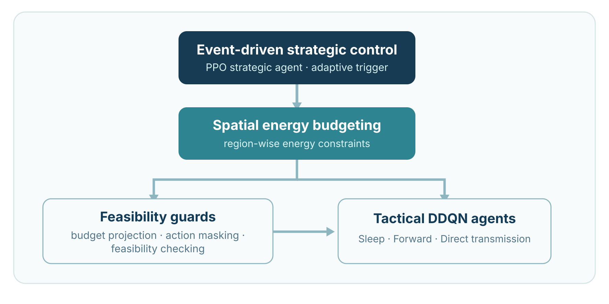

SubmittedFirst AuthorB.Sc. Thesis
WSN Energy Optimization
SCED-HRL
Event-driven PPO, spatial energy constraints and tactical DDQN agents for improving network lifetime, energy balance and communication reliability.
Explore SCED-HRL →ECE Graduate · KUET
Wireless Networks · WSN/IoT · AI for Communications · Network Optimization & Resource Allocation · Distributed/Federated Learning · Energy-Efficient Communication Systems
I am an Electronics and Communication Engineering graduate from Khulna University of Engineering & Technology (KUET). My research interests center on wireless sensor networks, Internet of Things, network optimization, resource allocation and energy-efficient intelligent communication systems.
My undergraduate thesis develops SCED-HRL, an event-driven hierarchical reinforcement-learning framework that combines strategic PPO control, spatial energy budgeting and tactical DDQN decisions for energy-aware WSN operation. I have also contributed to work on federated intrusion detection and communication-efficient knowledge transfer in sensor networks.
Featured Research

WSN Energy Optimization
Event-driven PPO, spatial energy constraints and tactical DDQN agents for improving network lifetime, energy balance and communication reliability.
Explore SCED-HRL →Federated WSN Security
Selective graph-teacher knowledge transfer for federated intrusion detection, combining compact telemetry, cached teacher targets and gated refresh decisions.
Explore THRIFT →Academic Snapshot
Recent Activity
Submission. First-author SCED-HRL thesis manuscript submitted to ICEEICT 2027.
Submission. Coauthored THRIFT manuscript on federated WSN intrusion detection submitted to ICEEICT 2027.
Submission. Coauthored industrial WSN energy/anomaly-detection manuscript submitted to the IEEE Internet of Things Journal.
Publication. Coauthored SenseStick published at IEEE BECITHCON 2026.
Recognition. Champion in Technical Writing at EUREKA S/1, KUET Research Society.